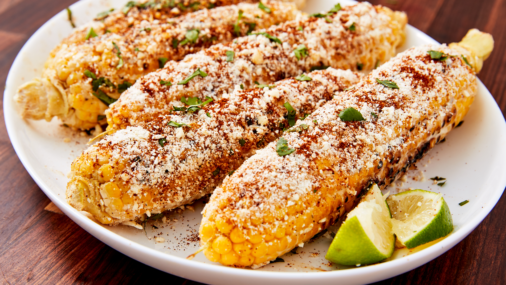

elote
Home
What makes elote (Mexican grilled corn) so irresistible is the contrasts of flavors and textures. Sweet corn is charred to smoky perfection on the grill. Then it's slathered in creamy mayo and sour cream sauce, seasoned with chili powder, and topped with chunks of feta or queso fresco cheese. The crunch of the corn against the creamy, messy sauce is pretty much to die for.This elote is the perfect summer side dish, if you ask us.

Ingredients
8 ears corn
1 spoon neutral oil
½ cup Mexican crema
2 spoons mayonnaise
½ cup feta cheese
½ teaspoon chili powder
¼ teaspoon garlic powder
¼ teaspoon cumin
¼ teaspoon kosher salt
Lime wedges, for serving
Cilantro, for garnish
Nutrition Facts
Calories 490.4
Total Fat 42.6g
Cholesterol 82.5mg
Sodium 346.8mg
Total Carbohydrate 21.9g
Vitamin C 320mcg
Vitamin A 2.3mcg
Procedure
Heat a grill to medium high.
Shuck the corn by peeling down the outside layers one at a time and keeping them attached, facing downwards away from the cob. When you’ve finished, use kitchen twine or string to tie the leaves togethe
Use your hands to rub oil on each corn cob evenly, then place them on a baking sheet.
In a small bowl, mix the sour cream, mayonnaise, feta or queso fresco (crumbling any large chunks into smaller chunks with your fingers), chili powder, garlic powder, cumin, and kosher salt in small bowl.
Place the corn on the grill and cook until it begins to blacken, then turn. Cook about 12 to 15 minutes total, until blackened on all sides.
Place the corn back on the baking sheet and use a spoon to coat it with cheese mixture. Garnish with a squeeze of lime and torn cilantro leaves. Serve immediately, using the tied husks as a handle for easy eating.
Expert Guide
Back ←
Scroll to Top ↑